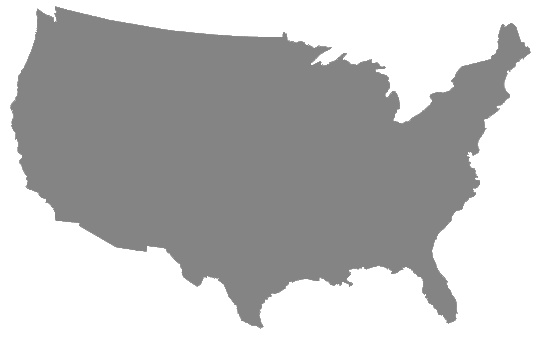

In order to grow a pound, any animal, including you, must eat many pounds of food. As a result, every calorie of meat you eat requires on average 8 calories of feed or grazing to grow. As Earth's population grows, this becomes unsustainable. Use the slider below to adjust the amount of meat in your diet and observe the micro and macro scale effects.
| PLANT PRODUCE | LIVESTOCK | ANIMAL FEED |
Source: USDA Land Usage (2007) and Cornell University (2003) https://www.ers.usda.gov/data-products/major-land-uses/ http://ajcn.nutrition.org/content/78/3/660S.full
